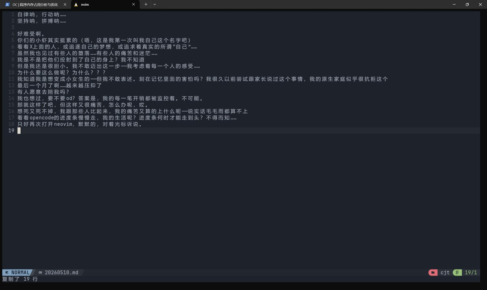

孙悟元 ヾ(≧▽≦*)o 喵！
@wuyuandev
RT @cjt_shrimp: 好累啊……看着别人追梦，追求梦想中的自己——
我却胆小、不敢迈步——是因为总在考虑每个人的感受吗？
想变成女生，但，我的家庭抗拒，说出口？还是别了。越来越压抑，想死又不敢，od？更不可能。
我不应该痛苦——我的痛苦在别人面前毛毛雨都算不上。无奈，…

chenjintang-shrimp
@cjt_shrimp
好累啊……看着别人追梦，追求梦想中的自己——
我却胆小、不敢迈步——是因为总在考虑每个人的感受吗？
想变成女生，但，我的家庭抗拒，说出口？还是别了。越来越压抑，想死又不敢，od？更不可能。
我不应该痛苦——我的痛苦在别人面前毛毛雨都算不上。无奈，只好再次打开Neovim，对着光标诉说，这一切。 https://t.co/b0joQnkkGD